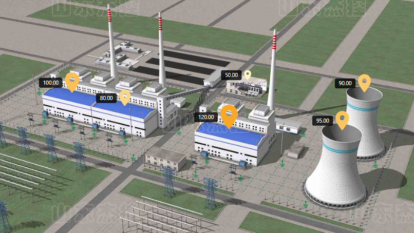
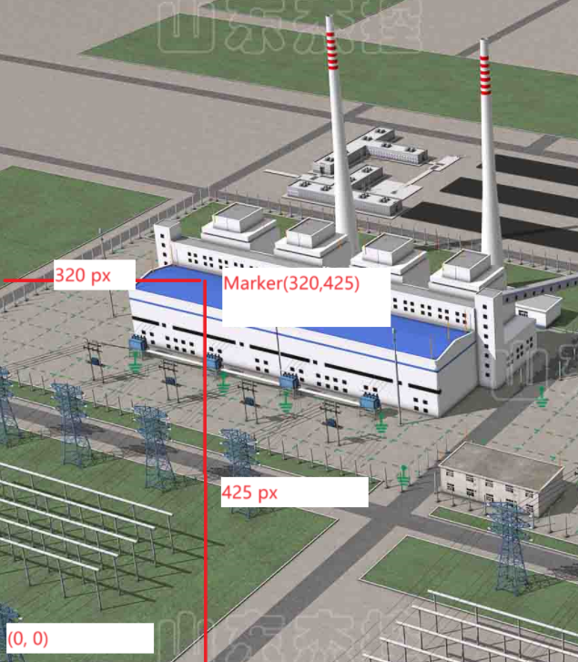
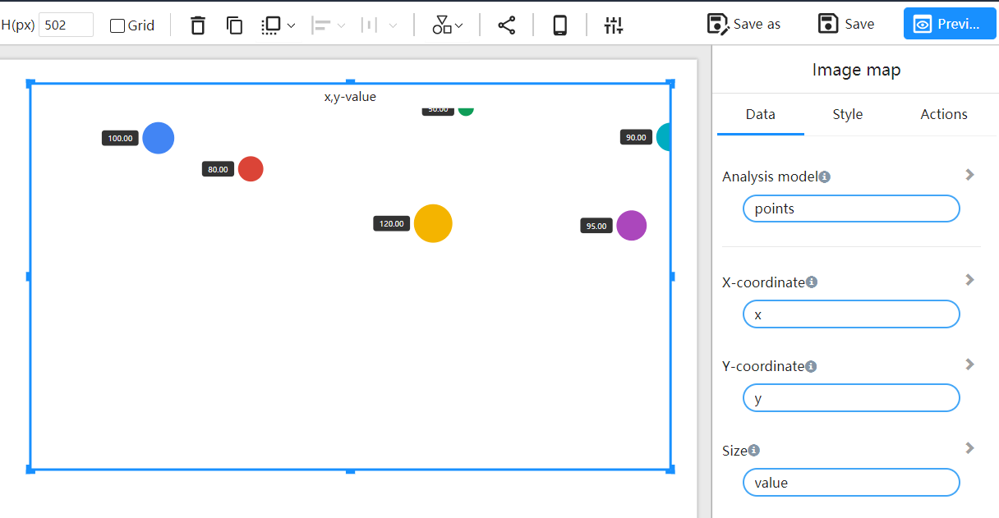
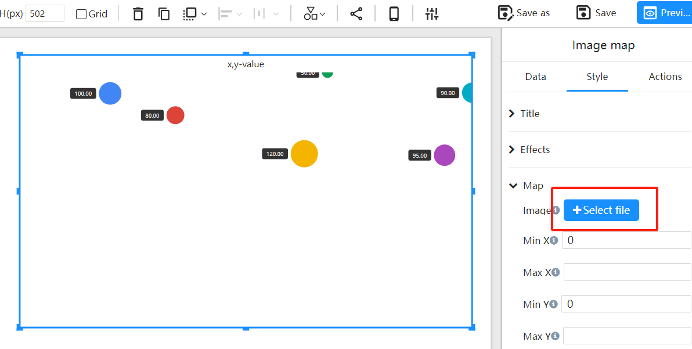
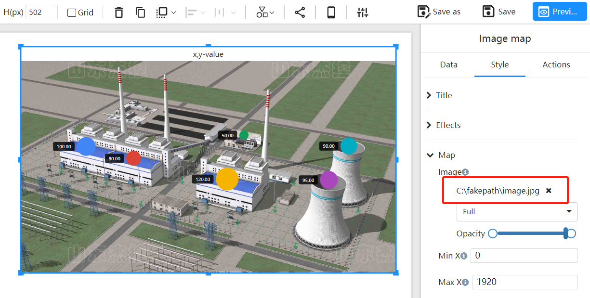
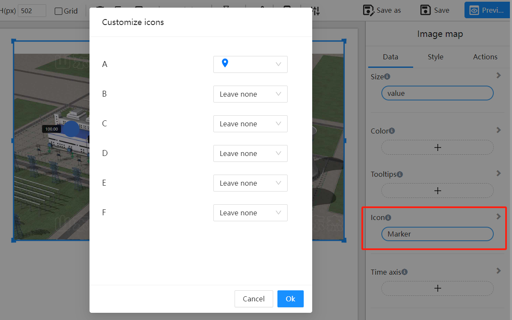

Image Map
What is an Image Map?
The "Image Map" component allows users to add markers at specific pixel locations on an image, enabling the identification and display of key information across different areas of the image.

How to Determine the X and Y Coordinates for Markers?
In an image map, the coordinate system's origin is at the bottom-left corner of the image (0, 0). Specifically:
- X Coordinate is the horizontal pixel distance from the origin to the marker.
- Y Coordinate is the vertical pixel distance from the origin to the marker.

Example
Example Data
The table below lists the coordinates and values for 6 markers:
| Marker | X | Y | Value |
|---|---|---|---|
| A | 337 | 645 | 100 |
| B | 579 | 585 | 80 |
| C | 1057 | 479 | 120 |
| D | 1143 | 703 | 50 |
| E | 1679 | 647 | 90 |
| F | 1577 | 475 | 95 |
Steps
Select the Image Map component

Determine the component's position and size on the canvas

Configure the component data
Choose the image background
Adjust markers to fit the image based on pixel location
Set marker icons
Choose different icons for markers
Configure marker colors
Select color fields, which can be based on values or categories